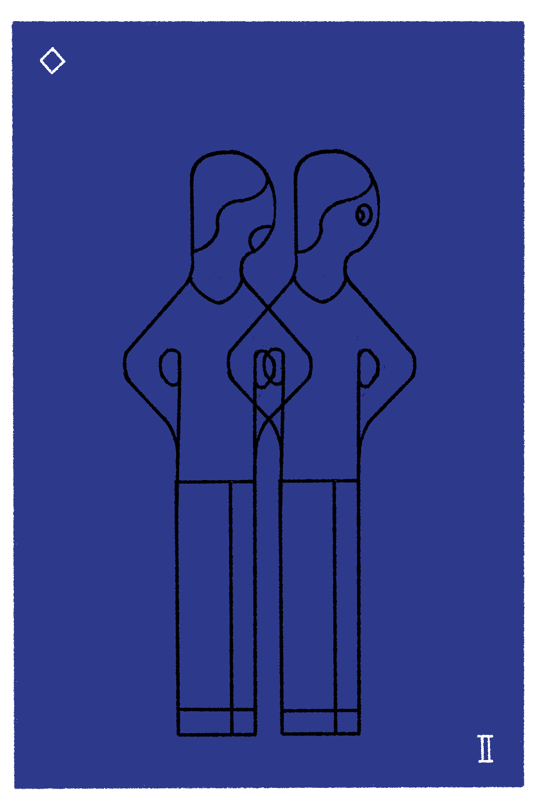
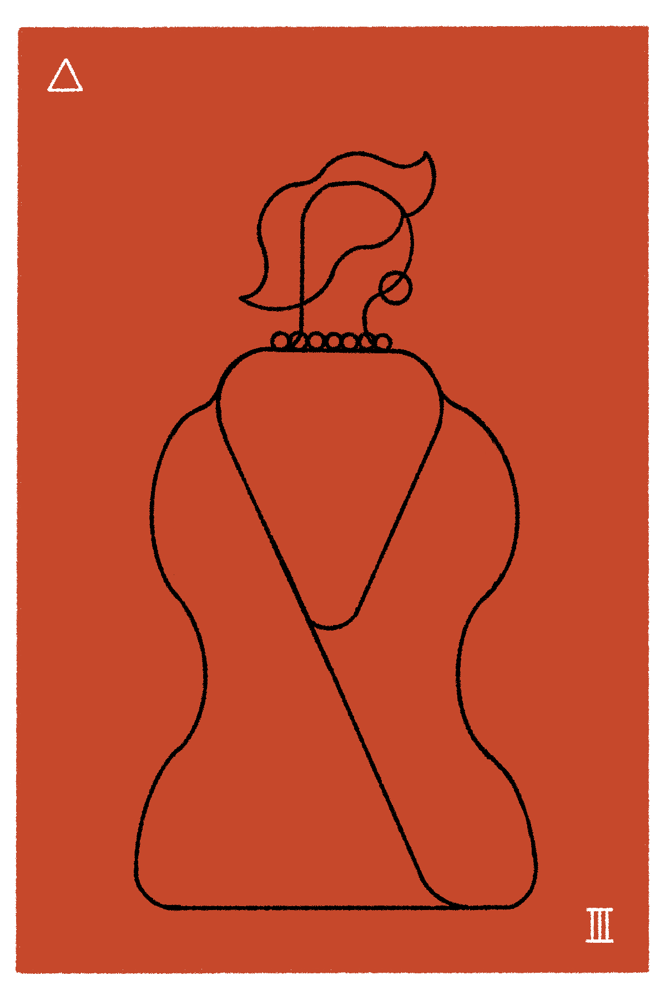
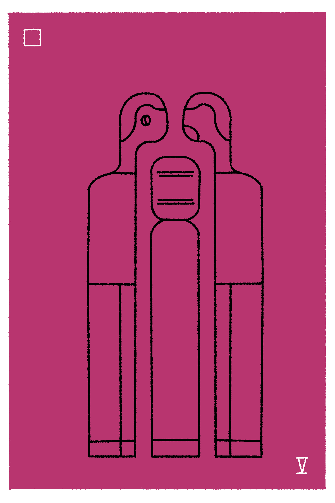
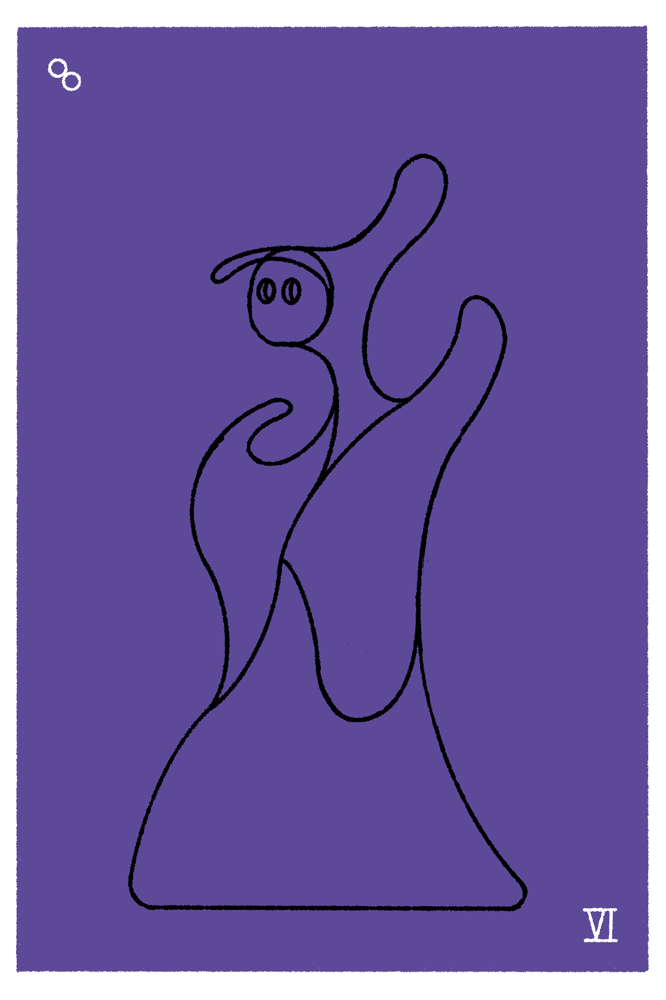
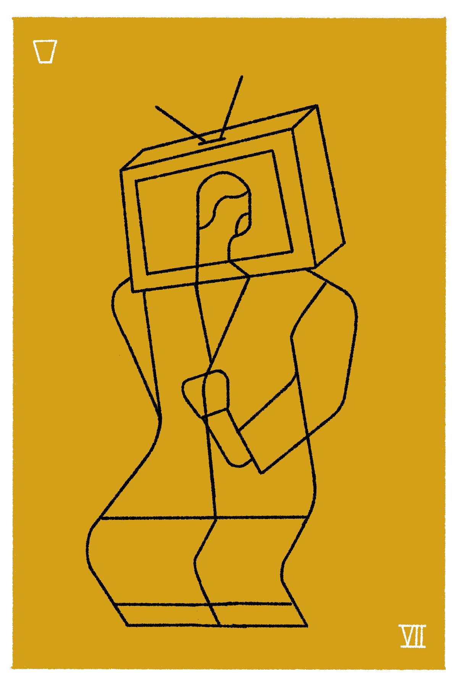

Gossip Types

The Protector
The first to “check on you” quietly, before anyone else even finds out. They’re still going to find out though.

The Confidant
People bring them secrets because they actually care, not because they’re nosy. Ok… maybe they are a little nosey.

The Auntie
Operates under the guise of being worried about you and now so is everyone else in the room. Very messy.

The Observer
Quietly worried about all the public drama. No need to broadcast sources though—the 24hr news cycle already does that.

The Spiller
Gossip as a love language — fast, discreet, and a little too good at spilling folks’ tea.

The Lurker
Collects gossip in close-proximity purely for the thrill of knowing. Tells absolutely no one but keeps a running tab of everyone’s mess.

The TV/Radio Host
Gossip isn’t a guilty pleasure here — it’s a full broadcast, and if an audience is present, even better!

The Spectator
Here for the drama purely as entertainment, but never actually in it. They know how to keep their mouth shut.